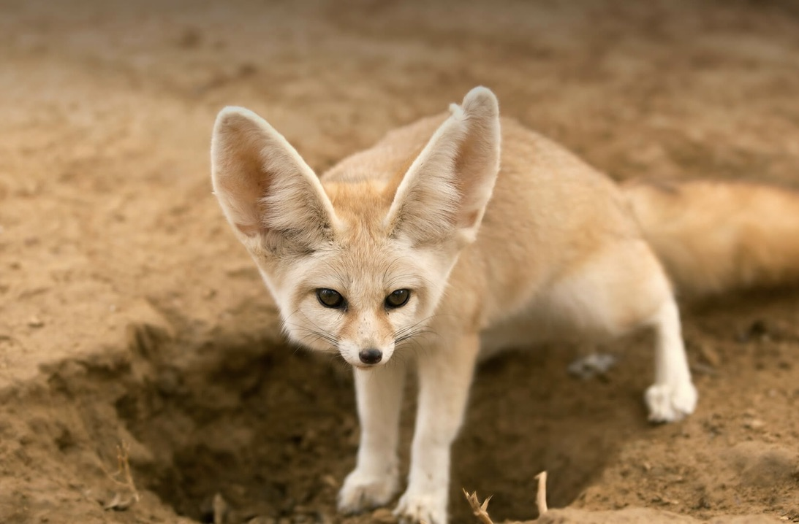
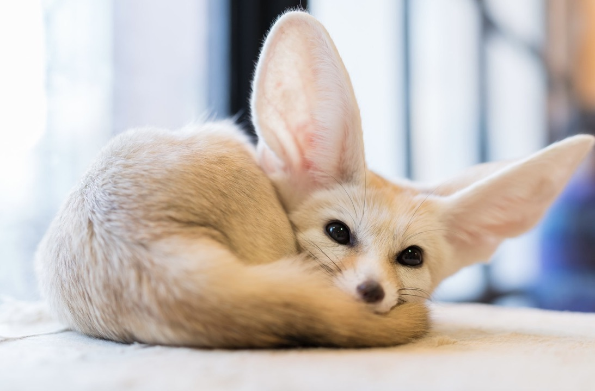
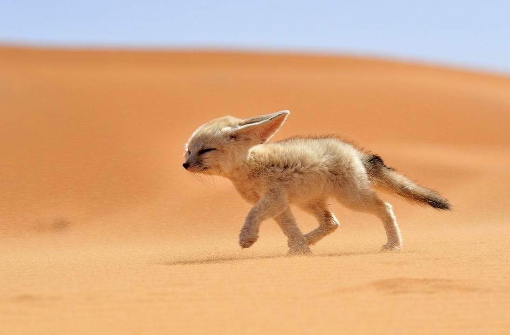

Memiliki hewan peliharaan menjadi salah satu kesenangan sendiri bagi banyak orang. Pasalnya seperti manusia, para hewan juga dianugerahi perasaan kasih sayang sehingga bisa tercipta hubungan yang erat dengan sang pemiliknya. Fennec Fox adalah hewan peliharaan baru yang bisa kamu coba miliki di rumah nih sebagai teman. Meskipun memiliki nama serigala namun hewan kecil ini termasuk keluarga rubah dan jinak lho. Penasaran bagaimana informasi lebih lengkap mengenai rubah imut ini? Simak penjelasannya di bawah!
1. Hewan mamalia yang memiliki habitat di gurun
Fennec fox (Vulpes zerda) merupakan jenis rubah yang banyak ditemukan di Afrika. Mereka hidup di gurun sahara dan juga tersebar hingga Arab Saudi. Fennec memakan serangga, kadal dan burung sebagai santapan utamanya. Namun ia sesekali juga mencari tanaman buah dan batang pohon untuk menghidrasi tubuhnya.
2. Fennec fox termasuk hewan nokturnal
Di alam bebas Fennec merupakan satwa lucu yang aktif di malam hari. Ketika siang hari Fennec lebih memilih bersembunyi dan tertidur lelap, telinganya berfungsi sebagai media untuk menghindari udara yang panas yang berlebihan.
3. Bisa menciptakan berbagai suara unik
Tidak sampai perawakannya saja yang bikin gemas, Fennec juga mampu mengeluarkan suara unik. Mulai dari gonggongan, geraman, lolongan, hingga suara menyerupai kucing. Unik banget kan? Nah, untuk mendapatkan seekor Fennec Fox kecil kamu harus rela merogoh kocek mulai dari Rp15 juta. Cukup mahal dan bikin tabungan jadi terkuras! Tertarik untuk memeliharanya guys?